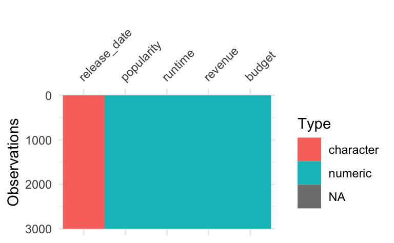
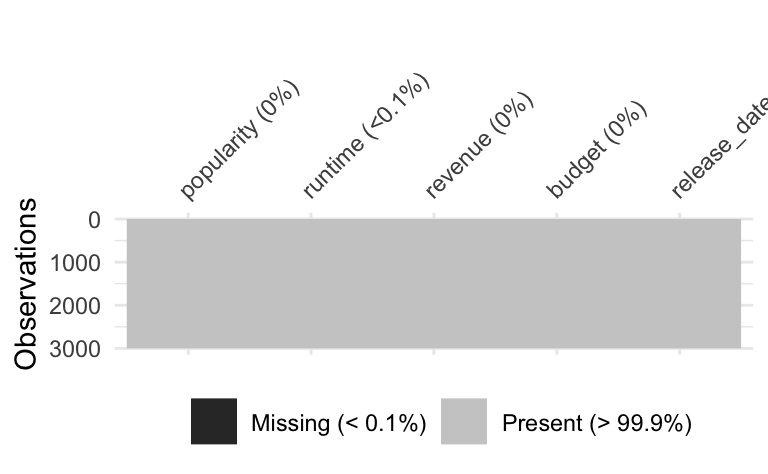
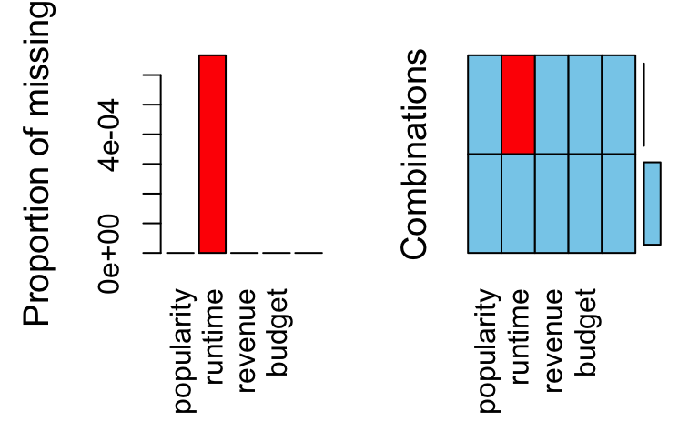
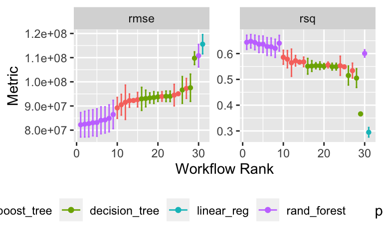

result_obj_file <- "tmdb_model_set.rds"
result_obj_path <- "/Users/sebastiansaueruser/github-repos/rexams-exercises/objects/tmdb_model_set.rds"
#exams::include_supplement(file = result_obj_file,
# recursive = TRUE)
# tmdb_model_set <- readr::read_rds("tmdb_model_set.rds")
#tmdb_model_set <- readr::read_rds(result_obj_path)Wir bearbeiten hier die Fallstudie TMDB Box Office Prediction - Can you predict a movie’s worldwide box office revenue?, ein Kaggle-Prognosewettbewerb.
Ziel ist es, genaue Vorhersagen zu machen, in diesem Fall für Filme.
Die Daten können Sie von der Kaggle-Projektseite beziehen oder so:
d_train_path <- "https://raw.githubusercontent.com/sebastiansauer/Lehre/main/data/tmdb-box-office-prediction/train.csv"
d_test_path <- "https://raw.githubusercontent.com/sebastiansauer/Lehre/main/data/tmdb-box-office-prediction/test.csv"Reichen Sie bei Kaggle eine Submission für die Fallstudie ein! Berichten Sie den Score!
Hinweise:
budget.tidymodels.revenue in Dollars; nicht in “Log-Dollars”. Sie müssen also rücktransformieren,
falls Sie revenue logarithmiert haben.
Vorbereitung
library(tidyverse)
library(tidymodels)
library(tictoc) # Rechenzeit messen
#library(Metrics)
library(lubridate) # Datumsangaben
library(VIM) # fehlende Werte
library(visdat) # Datensatz visualisierend_train_raw <- read_csv(d_train_path)
d_test <- read_csv(d_test_path)Mal einen Blick werfen:
glimpse(d_train_raw)## Rows: 3,000
## Columns: 23
## $ id <dbl> 1, 2, 3, 4, 5, 6, 7, 8, 9, 10, 11, 12, 13, 14, 1…
## $ belongs_to_collection <chr> "[{'id': 313576, 'name': 'Hot Tub Time Machine C…
## $ budget <dbl> 1.40e+07, 4.00e+07, 3.30e+06, 1.20e+06, 0.00e+00…
## $ genres <chr> "[{'id': 35, 'name': 'Comedy'}]", "[{'id': 35, '…
## $ homepage <chr> NA, NA, "http://sonyclassics.com/whiplash/", "ht…
## $ imdb_id <chr> "tt2637294", "tt0368933", "tt2582802", "tt182148…
## $ original_language <chr> "en", "en", "en", "hi", "ko", "en", "en", "en", …
## $ original_title <chr> "Hot Tub Time Machine 2", "The Princess Diaries …
## $ overview <chr> "When Lou, who has become the \"father of the In…
## $ popularity <dbl> 6.575393, 8.248895, 64.299990, 3.174936, 1.14807…
## $ poster_path <chr> "/tQtWuwvMf0hCc2QR2tkolwl7c3c.jpg", "/w9Z7A0GHEh…
## $ production_companies <chr> "[{'name': 'Paramount Pictures', 'id': 4}, {'nam…
## $ production_countries <chr> "[{'iso_3166_1': 'US', 'name': 'United States of…
## $ release_date <chr> "2/20/15", "8/6/04", "10/10/14", "3/9/12", "2/5/…
## $ runtime <dbl> 93, 113, 105, 122, 118, 83, 92, 84, 100, 91, 119…
## $ spoken_languages <chr> "[{'iso_639_1': 'en', 'name': 'English'}]", "[{'…
## $ status <chr> "Released", "Released", "Released", "Released", …
## $ tagline <chr> "The Laws of Space and Time are About to be Viol…
## $ title <chr> "Hot Tub Time Machine 2", "The Princess Diaries …
## $ Keywords <chr> "[{'id': 4379, 'name': 'time travel'}, {'id': 96…
## $ cast <chr> "[{'cast_id': 4, 'character': 'Lou', 'credit_id'…
## $ crew <chr> "[{'credit_id': '59ac067c92514107af02c8c8', 'dep…
## $ revenue <dbl> 12314651, 95149435, 13092000, 16000000, 3923970,…glimpse(d_test)## Rows: 4,398
## Columns: 22
## $ id <dbl> 3001, 3002, 3003, 3004, 3005, 3006, 3007, 3008, …
## $ belongs_to_collection <chr> "[{'id': 34055, 'name': 'Pokémon Collection', 'p…
## $ budget <dbl> 0.00e+00, 8.80e+04, 0.00e+00, 6.80e+06, 2.00e+06…
## $ genres <chr> "[{'id': 12, 'name': 'Adventure'}, {'id': 16, 'n…
## $ homepage <chr> "http://www.pokemon.com/us/movies/movie-pokemon-…
## $ imdb_id <chr> "tt1226251", "tt0051380", "tt0118556", "tt125595…
## $ original_language <chr> "ja", "en", "en", "fr", "en", "en", "de", "en", …
## $ original_title <chr> "ディアルガVSパルキアVSダークライ", "Attack of t…
## $ overview <chr> "Ash and friends (this time accompanied by newco…
## $ popularity <dbl> 3.851534, 3.559789, 8.085194, 8.596012, 3.217680…
## $ poster_path <chr> "/tnftmLMemPLduW6MRyZE0ZUD19z.jpg", "/9MgBNBqlH1…
## $ production_companies <chr> NA, "[{'name': 'Woolner Brothers Pictures Inc.',…
## $ production_countries <chr> "[{'iso_3166_1': 'JP', 'name': 'Japan'}, {'iso_3…
## $ release_date <chr> "7/14/07", "5/19/58", "5/23/97", "9/4/10", "2/11…
## $ runtime <dbl> 90, 65, 100, 130, 92, 121, 119, 77, 120, 92, 88,…
## $ spoken_languages <chr> "[{'iso_639_1': 'en', 'name': 'English'}, {'iso_…
## $ status <chr> "Released", "Released", "Released", "Released", …
## $ tagline <chr> "Somewhere Between Time & Space... A Legend Is B…
## $ title <chr> "Pokémon: The Rise of Darkrai", "Attack of the 5…
## $ Keywords <chr> "[{'id': 11451, 'name': 'pok√©mon'}, {'id': 1155…
## $ cast <chr> "[{'cast_id': 3, 'character': 'Tonio', 'credit_i…
## $ crew <chr> "[{'credit_id': '52fe44e7c3a368484e03d683', 'dep…Train-Set verschlanken
d_train <-
d_train_raw %>%
select(popularity, runtime, revenue, budget, release_date) Datensatz kennenlernen
library(visdat)
vis_dat(d_train)## Warning: `gather_()` was deprecated in tidyr 1.2.0.
## Please use `gather()` instead.
## This warning is displayed once every 8 hours.
## Call `lifecycle::last_lifecycle_warnings()` to see where this warning was generated.
Fehlende Werte prüfen
Welche Spalten haben viele fehlende Werte?
vis_miss(d_train)
Mit {VIM} kann man einen Datensatz gut auf fehlende Werte hin untersuchen:
aggr(d_train)
Rezept definieren
rec1 <-
recipe(revenue ~ ., data = d_train) %>%
#update_role(all_predictors(), new_role = "id") %>%
#update_role(popularity, runtime, revenue, budget, original_language) %>%
#update_role(revenue, new_role = "outcome") %>%
step_mutate(budget = if_else(budget < 10, 10, budget)) %>%
step_log(budget) %>%
step_mutate(release_date = mdy(release_date)) %>%
step_date(release_date, features = c("year", "month"), keep_original_cols = FALSE) %>%
step_impute_knn(all_predictors()) %>%
step_dummy(all_nominal())
rec1## Recipe
##
## Inputs:
##
## role #variables
## outcome 1
## predictor 4
##
## Operations:
##
## Variable mutation for if_else(budget < 10, 10, budget)
## Log transformation on budget
## Variable mutation for mdy(release_date)
## Date features from release_date
## K-nearest neighbor imputation for all_predictors()
## Dummy variables from all_nominal()tidy(rec1)## # A tibble: 6 × 6
## number operation type trained skip id
## <int> <chr> <chr> <lgl> <lgl> <chr>
## 1 1 step mutate FALSE FALSE mutate_AXiBI
## 2 2 step log FALSE FALSE log_mpbrN
## 3 3 step mutate FALSE FALSE mutate_uLpTz
## 4 4 step date FALSE FALSE date_rthRQ
## 5 5 step impute_knn FALSE FALSE impute_knn_e9pAc
## 6 6 step dummy FALSE FALSE dummy_qnnVeCheck das Rezept
prep(rec1, verbose = TRUE)## oper 1 step mutate [training]
## oper 2 step log [training]
## oper 3 step mutate [training]
## oper 4 step date [training]
## oper 5 step impute knn [training]
## oper 6 step dummy [training]
## The retained training set is ~ 0.38 Mb in memory.## Recipe
##
## Inputs:
##
## role #variables
## outcome 1
## predictor 4
##
## Training data contained 3000 data points and 2 incomplete rows.
##
## Operations:
##
## Variable mutation for ~if_else(budget < 10, 10, budget) [trained]
## Log transformation on budget [trained]
## Variable mutation for ~mdy(release_date) [trained]
## Date features from release_date [trained]
## K-nearest neighbor imputation for runtime, budget, release_date_year, release_da... [trained]
## Dummy variables from release_date_month [trained]d_train_baked <-
prep(rec1) %>%
bake(new_data = NULL)
d_train_baked## # A tibble: 3,000 × 16
## popularity runtime budget revenue release_date_year release_date_month_Feb
## <dbl> <dbl> <dbl> <dbl> <dbl> <dbl>
## 1 6.58 93 16.5 12314651 2015 1
## 2 8.25 113 17.5 95149435 2004 0
## 3 64.3 105 15.0 13092000 2014 0
## 4 3.17 122 14.0 16000000 2012 0
## 5 1.15 118 2.30 3923970 2009 1
## 6 0.743 83 15.9 3261638 1987 0
## 7 7.29 92 16.5 85446075 2012 0
## 8 1.95 84 2.30 2586511 2004 0
## 9 6.90 100 2.30 34327391 1996 1
## 10 4.67 91 15.6 18750246 2003 0
## # … with 2,990 more rows, and 10 more variables: release_date_month_Mar <dbl>,
## # release_date_month_Apr <dbl>, release_date_month_May <dbl>,
## # release_date_month_Jun <dbl>, release_date_month_Jul <dbl>,
## # release_date_month_Aug <dbl>, release_date_month_Sep <dbl>,
## # release_date_month_Oct <dbl>, release_date_month_Nov <dbl>,
## # release_date_month_Dec <dbl>d_train_baked %>%
map_df(~ sum(is.na(.)))## # A tibble: 1 × 16
## popularity runtime budget revenue release_date_year release_date_month_Feb
## <int> <int> <int> <int> <int> <int>
## 1 0 0 0 0 0 0
## # … with 10 more variables: release_date_month_Mar <int>,
## # release_date_month_Apr <int>, release_date_month_May <int>,
## # release_date_month_Jun <int>, release_date_month_Jul <int>,
## # release_date_month_Aug <int>, release_date_month_Sep <int>,
## # release_date_month_Oct <int>, release_date_month_Nov <int>,
## # release_date_month_Dec <int>Keine fehlenden Werte mehr in den Prädiktoren.
Nach fehlenden Werten könnte man z.B. auch so suchen:
datawizard::describe_distribution(d_train_baked)## Variable | Mean | SD | IQR | Range | Skewness | Kurtosis | n | n_Missing
## ---------------------------------------------------------------------------------------------------------------------
## popularity | 8.46 | 12.10 | 6.88 | [1.00e-06, 294.34] | 14.38 | 280.10 | 3000 | 0
## runtime | 107.84 | 22.09 | 24.00 | [0.00, 338.00] | 1.02 | 8.19 | 3000 | 0
## budget | 12.51 | 6.44 | 14.88 | [2.30, 19.76] | -0.87 | -1.09 | 3000 | 0
## revenue | 6.67e+07 | 1.38e+08 | 6.66e+07 | [1.00, 1.52e+09] | 4.54 | 27.78 | 3000 | 0
## release_date_year | 2004.58 | 15.48 | 17.00 | [1969.00, 2068.00] | 1.22 | 3.94 | 3000 | 0
## release_date_month_Feb | 0.08 | 0.26 | 0.00 | [0.00, 1.00] | 3.22 | 8.37 | 3000 | 0
## release_date_month_Mar | 0.08 | 0.27 | 0.00 | [0.00, 1.00] | 3.11 | 7.71 | 3000 | 0
## release_date_month_Apr | 0.08 | 0.27 | 0.00 | [0.00, 1.00] | 3.06 | 7.35 | 3000 | 0
## release_date_month_May | 0.07 | 0.26 | 0.00 | [0.00, 1.00] | 3.24 | 8.49 | 3000 | 0
## release_date_month_Jun | 0.08 | 0.27 | 0.00 | [0.00, 1.00] | 3.12 | 7.76 | 3000 | 0
## release_date_month_Jul | 0.07 | 0.25 | 0.00 | [0.00, 1.00] | 3.38 | 9.45 | 3000 | 0
## release_date_month_Aug | 0.09 | 0.28 | 0.00 | [0.00, 1.00] | 2.97 | 6.83 | 3000 | 0
## release_date_month_Sep | 0.12 | 0.33 | 0.00 | [0.00, 1.00] | 2.33 | 3.43 | 3000 | 0
## release_date_month_Oct | 0.10 | 0.30 | 0.00 | [0.00, 1.00] | 2.63 | 4.90 | 3000 | 0
## release_date_month_Nov | 0.07 | 0.26 | 0.00 | [0.00, 1.00] | 3.27 | 8.67 | 3000 | 0
## release_date_month_Dec | 0.09 | 0.28 | 0.00 | [0.00, 1.00] | 2.92 | 6.52 | 3000 | 0So bekommt man gleich noch ein paar Infos über die Verteilung der Variablen. Praktische Sache.
Check Test-Sample
Das Test-Sample backen wir auch mal. Das hat nur den Zwecke,
zu prüfen, ob unser Rezept auch richtig funktioniert.
Das Preppen und Backen des Test-Samples wir automatisch von predict() bzw. last_fit() erledigt.
Wichtig: Wir preppen den Datensatz mit dem Train-Sample, auch wenn wir das Test-Sample backen wollen.
rec1_prepped <- prep(rec1)
d_test_baked <-
bake(rec1_prepped, new_data = d_test)
d_test_baked %>%
head()## # A tibble: 6 × 15
## popularity runtime budget release_date_year release_date_mon… release_date_mo…
## <dbl> <dbl> <dbl> <dbl> <dbl> <dbl>
## 1 3.85 90 2.30 2007 0 0
## 2 3.56 65 11.4 2058 0 0
## 3 8.09 100 2.30 1997 0 0
## 4 8.60 130 15.7 2010 0 0
## 5 3.22 92 14.5 2005 1 0
## 6 8.68 121 2.30 1996 1 0
## # … with 9 more variables: release_date_month_Apr <dbl>,
## # release_date_month_May <dbl>, release_date_month_Jun <dbl>,
## # release_date_month_Jul <dbl>, release_date_month_Aug <dbl>,
## # release_date_month_Sep <dbl>, release_date_month_Oct <dbl>,
## # release_date_month_Nov <dbl>, release_date_month_Dec <dbl>Nur aus Zeitgründen ist hier \(v=2\) eingestellt; besser wäre z.B. \(v=10\) und \(r=3\).
cv_scheme <- vfold_cv(d_train,
v = 2,
repeats = 1)Baum
mod_tree <-
decision_tree(cost_complexity = tune(),
tree_depth = tune(),
mode = "regression")Random Forest
doParallel::registerDoParallel()mod_rf <-
rand_forest(mtry = tune(),
min_n = tune(),
trees = 1000,
mode = "regression") %>%
set_engine("ranger", num.threads = 4)XGBoost
mod_boost <- boost_tree(mtry = tune(),
min_n = tune(),
trees = tune()) %>%
set_engine("xgboost", nthreads = parallel::detectCores()) %>%
set_mode("regression")LM
mod_lm <-
linear_reg()Workflow-Set
preproc <- list(rec1 = rec1)
models <- list(tree1 = mod_tree, rf1 = mod_rf, boost1 = mod_boost, lm1 = mod_lm)
all_workflows <- workflow_set(preproc, models)Fitten und tunen
Wenn man das Ergebnis-Objekt abgespeichert hat, dann kann man es einfach laden, spart Rechenzeit (der Tag ist kurz):
result_obj_file <- "tmdb_model_set.rds"(Davon ausgehend, dass die Datei im Arbeitsverzeichnis liegt.)
Dann könnte man Folgendes machen:
if (file.exists(result_obj_file)) {
tmdb_model_set <- read_rds(result_obj_file)
} else {
tic()
tmdb_model_set <-
all_workflows %>%
workflow_map(
resamples = cv_scheme,
grid = 10,
# metrics = metric_set(rmse),
seed = 42, # reproducibility
verbose = TRUE)
toc()
}Achtung Gefährlich! Zwischenspeichern auf der Festplatte birgt die Gefahr, dass man vergisst, das Objekt auf der Festplatte zu aktualisieren und Sie noch in einem Jahr und nach 100 Updates Ihres Rezepts immer noch das uralte Objekt von der Festplatte laden …
Um Rechenzeit zu sparen, kann man das Ergebnisobjekt abspeichern, dann muss man beim nächsten Mal nicht wieder von Neuem berechnen:
#write_rds(tmdb_model_set, "objects/tmdb_model_set.rds")Hier berechnen wir aber lieber das Modell neu:
tic()
tmdb_model_set <-
all_workflows %>%
workflow_map(
resamples = cv_scheme,
grid = 10,
# metrics = metric_set(rmse),
seed = 42, # reproducibility
verbose = TRUE)
toc()## 30.054 sec elapsedFinalisieren
Welcher Algorithmus schneidet am besten ab?
Genauer geagt, welches Modell, denn es ist ja nicht nur ein Algorithmus, sondern ein Algorithmus plus ein Rezept plus die Parameterinstatiierung plus ein spezifischer Datensatz.
tune::autoplot(tmdb_model_set) +
theme(legend.position = "bottom")
R-Quadrat ist nicht entscheidend; rmse ist wichtiger.
Die Ergebnislage ist nicht ganz klar, aber
einiges spricht für das Boosting-Modell, rec1_boost1.
tmdb_model_set %>%
collect_metrics() %>%
arrange(-mean) %>%
head(10)## # A tibble: 10 × 9
## wflow_id .config preproc model .metric .estimator mean n std_err
## <chr> <chr> <chr> <chr> <chr> <chr> <dbl> <int> <dbl>
## 1 rec1_lm1 Preprocess… recipe line… rmse standard 1.16e8 2 2.42e6
## 2 rec1_rf1 Preprocess… recipe rand… rmse standard 1.11e8 2 2.85e6
## 3 rec1_tree1 Preprocess… recipe deci… rmse standard 1.10e8 2 1.61e6
## 4 rec1_tree1 Preprocess… recipe deci… rmse standard 9.75e7 2 3.43e6
## 5 rec1_boost1 Preprocess… recipe boos… rmse standard 9.73e7 2 2.51e6
## 6 rec1_tree1 Preprocess… recipe deci… rmse standard 9.66e7 2 3.36e6
## 7 rec1_boost1 Preprocess… recipe boos… rmse standard 9.50e7 2 1.05e5
## 8 rec1_boost1 Preprocess… recipe boos… rmse standard 9.45e7 2 2.71e6
## 9 rec1_tree1 Preprocess… recipe deci… rmse standard 9.40e7 2 1.32e6
## 10 rec1_tree1 Preprocess… recipe deci… rmse standard 9.40e7 2 1.32e6best_model_params <-
extract_workflow_set_result(tmdb_model_set, "rec1_boost1") %>%
select_best()## Warning: No value of `metric` was given; metric 'rmse' will be used.best_model_params## # A tibble: 1 × 4
## mtry trees min_n .config
## <int> <int> <int> <chr>
## 1 1 928 17 Preprocessor1_Model01Finalisieren
best_wf <-
all_workflows %>%
extract_workflow("rec1_boost1")
best_wf## ══ Workflow ════════════════════════════════════════════════════════════════════
## Preprocessor: Recipe
## Model: boost_tree()
##
## ── Preprocessor ────────────────────────────────────────────────────────────────
## 6 Recipe Steps
##
## • step_mutate()
## • step_log()
## • step_mutate()
## • step_date()
## • step_impute_knn()
## • step_dummy()
##
## ── Model ───────────────────────────────────────────────────────────────────────
## Boosted Tree Model Specification (regression)
##
## Main Arguments:
## mtry = tune()
## trees = tune()
## min_n = tune()
##
## Engine-Specific Arguments:
## nthreads = parallel::detectCores()
##
## Computational engine: xgboostbest_wf_finalized <-
best_wf %>%
finalize_workflow(best_model_params)
best_wf_finalized## ══ Workflow ════════════════════════════════════════════════════════════════════
## Preprocessor: Recipe
## Model: boost_tree()
##
## ── Preprocessor ────────────────────────────────────────────────────────────────
## 6 Recipe Steps
##
## • step_mutate()
## • step_log()
## • step_mutate()
## • step_date()
## • step_impute_knn()
## • step_dummy()
##
## ── Model ───────────────────────────────────────────────────────────────────────
## Boosted Tree Model Specification (regression)
##
## Main Arguments:
## mtry = 1
## trees = 928
## min_n = 17
##
## Engine-Specific Arguments:
## nthreads = parallel::detectCores()
##
## Computational engine: xgboostFinal Fit
fit_final <-
best_wf_finalized %>%
fit(d_train)## [10:24:41] WARNING: amalgamation/../src/learner.cc:627:
## Parameters: { "nthreads" } might not be used.
##
## This could be a false alarm, with some parameters getting used by language bindings but
## then being mistakenly passed down to XGBoost core, or some parameter actually being used
## but getting flagged wrongly here. Please open an issue if you find any such cases.fit_final## ══ Workflow [trained] ══════════════════════════════════════════════════════════
## Preprocessor: Recipe
## Model: boost_tree()
##
## ── Preprocessor ────────────────────────────────────────────────────────────────
## 6 Recipe Steps
##
## • step_mutate()
## • step_log()
## • step_mutate()
## • step_date()
## • step_impute_knn()
## • step_dummy()
##
## ── Model ───────────────────────────────────────────────────────────────────────
## ##### xgb.Booster
## raw: 1 Mb
## call:
## xgboost::xgb.train(params = list(eta = 0.3, max_depth = 6, gamma = 0,
## colsample_bytree = 1, colsample_bynode = 0.0666666666666667,
## min_child_weight = 17L, subsample = 1, objective = "reg:squarederror"),
## data = x$data, nrounds = 928L, watchlist = x$watchlist, verbose = 0,
## nthreads = 8L, nthread = 1)
## params (as set within xgb.train):
## eta = "0.3", max_depth = "6", gamma = "0", colsample_bytree = "1", colsample_bynode = "0.0666666666666667", min_child_weight = "17", subsample = "1", objective = "reg:squarederror", nthreads = "8", nthread = "1", validate_parameters = "TRUE"
## xgb.attributes:
## niter
## callbacks:
## cb.evaluation.log()
## # of features: 15
## niter: 928
## nfeatures : 15
## evaluation_log:
## iter training_rmse
## 1 130631526
## 2 125426215
## ---
## 927 44181662
## 928 44158939d_test$revenue <- NA
final_preds <-
fit_final %>%
predict(new_data = d_test) %>%
bind_cols(d_test)Submission
submission_df <-
final_preds %>%
select(id, revenue = .pred)Abspeichern und einreichen:
#write_csv(submission_df, file = "submission.csv")Kaggle Score
Diese Submission erzielte einen Score von 4.79227 (RMSLE).
sol <- 4.79227Categories: